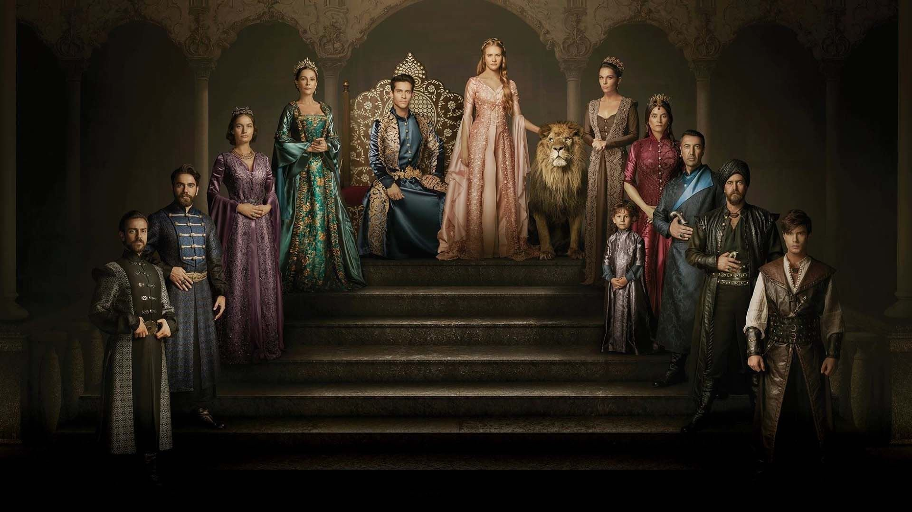

magnificent Centurey
Kösem Sultan is a grand historical Turkish drama that tells the powerful and emotional story of one of the most influential women in Ottoman history. The series follows Anastasia, a Greek girl who is brought to the Ottoman palace and rises to become Kösem Sultan — a queen who rules behind the curtain during the empire's most turbulent times. Filled with palace intrigue, political power plays, emotional sacrifices, and breathtaking visuals, *Kösem Sultan* masterfully portrays the strength, intelligence, and resilience of a woman who shaped the fate of an empire. It’s a compelling watch for those who enjoy royal drama, historical depth, and strong female leads.